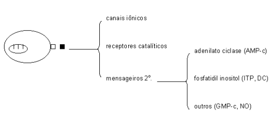
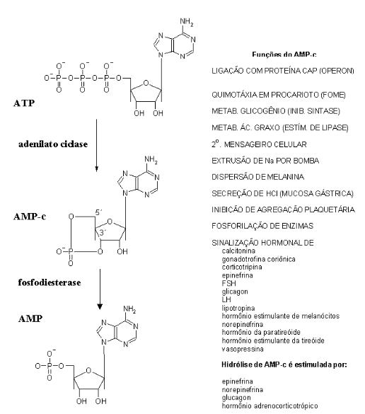

Transdução de Sinais
Introdução
Imagine que você se encontra na posição honorável de iniciar uma partida de jogo de bilhar. Um taco, várias bolas, e a missão ímpar de distribuir as bolas no maior número de caçapas em uma única tacada. Observe que a bola branca não bate em todas as demais, apenas em uma ou duas, que por sua vez comunicam o seu gesto irascível a outras 4 ou 5, e assim por diante, até que todas as bolas da mesa tenham, indiretamente, sofrido com sua decisão. Isto é transdução de sinal.
Não é transmissão, pois não linearidade na informação, como a que ocorre durante o impulso nervoso em um neurônio. Há, outrossim, um efeito cascata que faz chegar a todas as bolas um seu desejo de colocar, aos menos parte delas, dentro das caçapas. Assim como as bolas de bilhar são coloridas, os efetores finais da transdução de sinais também são diferentes, cada qual com um objetivo particular que visa um alvo maior, realizado pelo conjunto, o que na nossa metáfora seria vencer o jogo.
Bioquimicamente, se uma molécula de glicose atinge o seu receptor protéico na superfície de uma membrana, ocorrem diversos fenômenos em cascata, os quais produzem um sem número de compostos e enzimas ativadas para fazer compreender e preparar o organismo à chegada de comida. Veja que essa molécula de glicose não interagiu com os compostos ou enzimas, apenas iniciou o mecanismo, assim como a bola branca do jogo. A grande vantagem da transdução de sinais é a amplificação do mesmo. Imagine a possibilidade da bola branca encaçapar, sozinha, as demais que lhe apetecem.
Existem diversos mecanismos de transdução de sinais, todos envolvendo a interação inicial de um composto chave em uma proteína, e o desencadeamento de operações metabólicas em cascata. Neste sentido, a transdução de sinais atua como uma chave comutadora de liga/desliga sobre o controle das principais atividades metabólicas que acompanham o organismo.

Detalhes
A evolução biológica caminhou, desde procariontes até eucariontes, de células isoladas até organismos complexos, no sentido de permitir que as rotas bioquímicas no interior de seus compartimentos pudessem ser reguladas. Essa regulação metabólica é vital para que os compartimentos celulares, tecidos e orgãos possam funcionar corretamente. A regulação metabólica se dá pela comunicação entre compartimentos celulares, e entre células (junções gap). Essa comunicação pode ocorrer em função da disponibilidade de substratos, de neurotransmissores, e de hormônios. Neste último caso, pode-se considerar o hormônio como um sinal metabólico (metabólico), e seu receptor protéico como um aceptor da mensagem.
Como o hormônio ou mensageiro não exerce função direta sobre o efeito final metabólico, mas indireta, onde sua combinação ao receptor desencadeia um mecanismo de ativações em cascata, o mecanismo é denominado de transdução de sinais, e não de transmissão de sinais. Se fosse uma transmissão de sinais, o mensageiro metabólico (insulina, por ex) agiria diretamente sobre o efeito final (ativação da hexoquinase da glicólise, por ex). Hormônios e mensageiros metabólicos podem se combinar com seus receptores dentro da célula ou na superfície da célula. Hormônios que se ligam ao receptor dentro da célula o fazem no citoplasma ou no núcleo.
Exemplos dessa classe incluem os hormônios esteroidais, vitamina E, vitamina D, e tiroxina. Como a interação citoplasmática está relacionada a uma ativação de genes específicos, esse tipo de transdução de sinais opera mais lentamente no que tange ao seus resultados finais (administração de cortisol, por ex, pode demorar dias para surtir o efeito desejado).
Outra classe de mensageiros, entretanto, se combina com seus receptores na superfície celular. Transdução de sinal por receptores na superfície celular pode ocorrer diretamente através da molécula efetora (canais iônicos, receptores de GABA, receptores colinérgicos, receptores nicotínicos, receptores catalíticos – insulina, NO), ou indiretamente, através de mensageiros secundários (sistema da adenilato ciclase, GMP-c, cascata de fosfatidil inositol). Mensageiros secundários possuem este nome por estarem a meio caminho entre o sinal (insulina, por ex) e o efeito final (ativação da glicólise, por ex). À excessão de canais iônicos e neurotransmissores, as diferentes formas de transdução de sinal culminam com a fosforilação ou defosforilação de proteínas e enzimas, um mecanismo que as torna ativadas ou não, dependendo do caso (botão liga/desliga).
A transdução de sinais que ocorre através de mensageiros secundários se dá por 2 mecanismos distintos, a saber, o sistema da adenilato ciclase (produção de AMP-c, efeito do glicagon, por ex), e a cascata de fosfatidil inositol. Em ambos, o efeito final é a fosforilação/defosforilação de proteínas chave para as rotas metabólicas (liga/desliga). O sistema da adenilato ciclase tem por função a produção do mensageiro secundário AMP-c (AMP cíclico, um AMP com uma ligação fosfodiéster 3’,5’ entre o fosfato e a ribose). O sistema é formado por um conjunto de três complexos protéicos, sequencialmente dispostos: receptor (ligação do sinal), proteína G (intermediário na comunicação entre o receptor e a adenilato ciclase), e adenilato ciclase (produção de AMP-c). A proteína G é formada por três subunidades, \(\alpha\), \(\beta\), e \(\gamma\).
Em estado inativo a subunidade \(\alpha\) da proteína G está combinada com GDP (daí o nome do complexo). Quando o hormônio se liga ao receptor na superfície celular, promove uma mudança conformacional neste que faz com que o GDP da subunidade \(\alpha\) da proteína G seja deslocado, sucedendo sua substituição por GTP. O GTP ativa a proteína G, fazendo com que a subunidade \(\alpha\) desta migre pela membrana até a adenilato ciclase.
A energia de hidrólise do GTP faz com que a adenilato ciclase transforme uma molécula de ATP em AMP-c. Neste momento, a subunidade \(\alpha\) da proteína G torna-se inativa, uma vez que encontra-se combinada com GDP, e migra de volta ao complexo \(\beta\)\(\gamma\), reiniciando o ciclo.
O AMP-c assim produzido ativa a proteína quinase A, a qual ativa por fosforilação as subunidades catalíticas de um grande número de enzimas, em seus resíduos de Ser e Thr, às custas de ATP. Esse mecanismo em cascata propicia vários efeitos metabólicos finais nas rotas bioquímicas. O AMP-c dura de 6 a 10 segundos, sendo reconvertido a AMP pela fosfodiesterase. Durante este período, contudo, o AMP-c é capaz de realizar um conjunto extenso de tarefas metabólicas, tais como representado na figura a seguir.
O segundo mecanismo de transdução de sinais por mensageiros secundários é o do sistema do fosfatidil inositol. Neste sistema, a combinação de um hormônio com seu receptor promove uma alteração conformacional neste, ativando uma proteína associada ao receptor, a fosfolipase C. Esta enzima hidrolisa a estrutura de um ácido graxo específico da membrana, o fosfatidil inositol, produzindo os mensageiros secundários inositol trifosfato (ITP) e diacilglicerol (DC). O ITP induz um aumento no Ca2+ intracelular (de até 10\(^{-9}\) M para 10\(^{-5}\)M, vindo do retículo sarcoplasmático), o qual pode servir a duas funções. A primeira é a ativação da proteína quinase C dependente de calmodulina, e a segunda é colaborar, junto com o DC produzido, para ativação da proteína quinase C de membrana.
O efeito final de ambas as ações é a fosforilação de proteínas específicas do metabolismo. A calmodulina é uma pequena proteína que carrega a grande maioria do Ca2+ intracelular em seus 4 sítios de ligação, servindo como doadora do íon na ativação de outras proteínas. Outros sistemas mensageiros incluem o do GMP-c e o do NO (óxido nítrico). O sistema do GMP-c é mecanisticamente similar ao do da adenilato ciclase, produzindo, contudo, relaxamento da musculatura lisa (vasodilatação do endotélio) e agregação plaquetária, ainda atuando no sistema visual.
O sistema do NO, radical livre formado a partir de Arg, NADPH e O2, em hepatócitos, macrófagos e neutrófilos, atua na vasodilatação, inibição de agregação plaquetária, mecanismos de neurotransmissores cerebrais, e na função bactericida e tumoricida de macrófagos.
